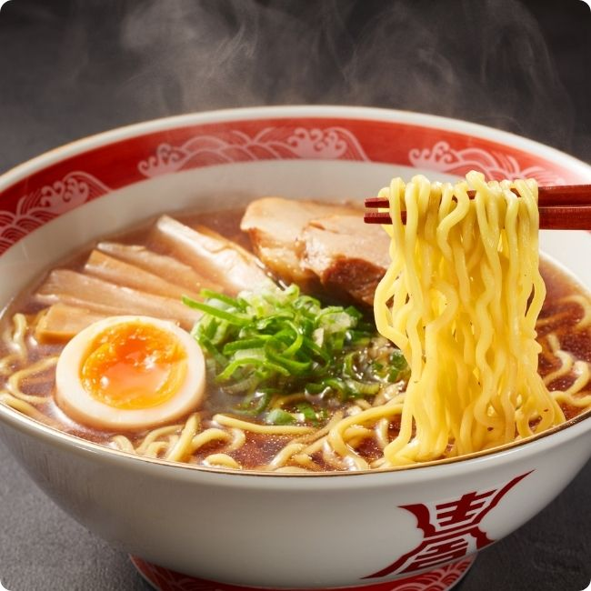
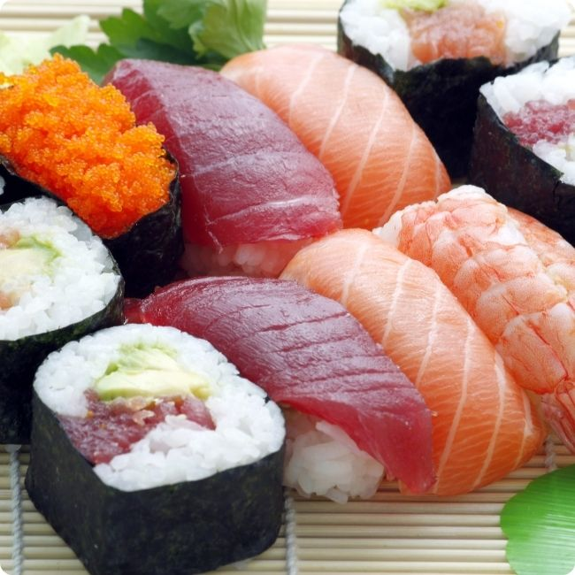

Japanese Foods
Popular Japanese Foods
Ramen and sushi are two of Japan’s most iconic and beloved dishes. Ramen is a hearty noodle soup that typically includes flavorful broth, sliced pork, green onions, and a soft-boiled egg, offering a warm and savory experience. Sushi, on the other hand, showcases the freshness and simplicity of Japanese cuisine through vinegared rice paired with raw or cooked seafood, vegetables, and sometimes egg. Both dishes are not only staples in Japanese culinary culture but also popular worldwide for their taste and presentation.
-
Ramen
Figure 1: A bowl of traditional Japanese Ramen -
Sushi
Figure 2: A selection of fresh sushi